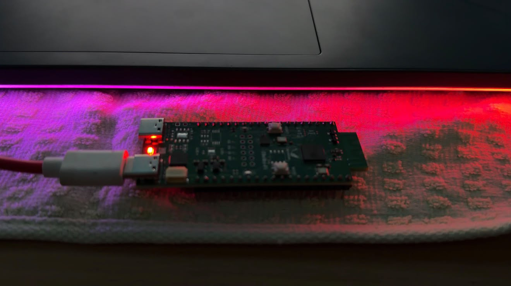
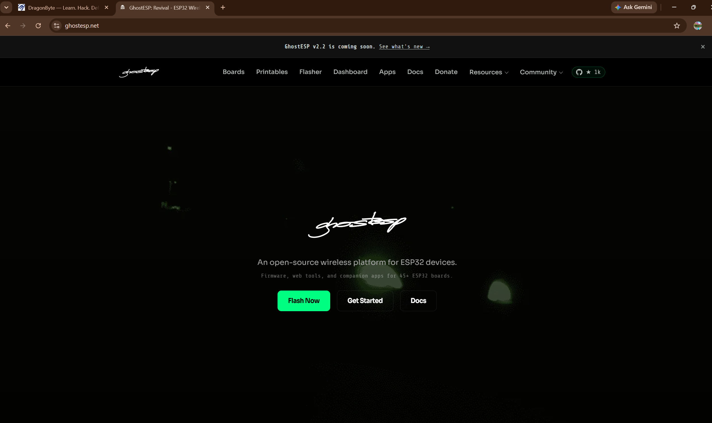
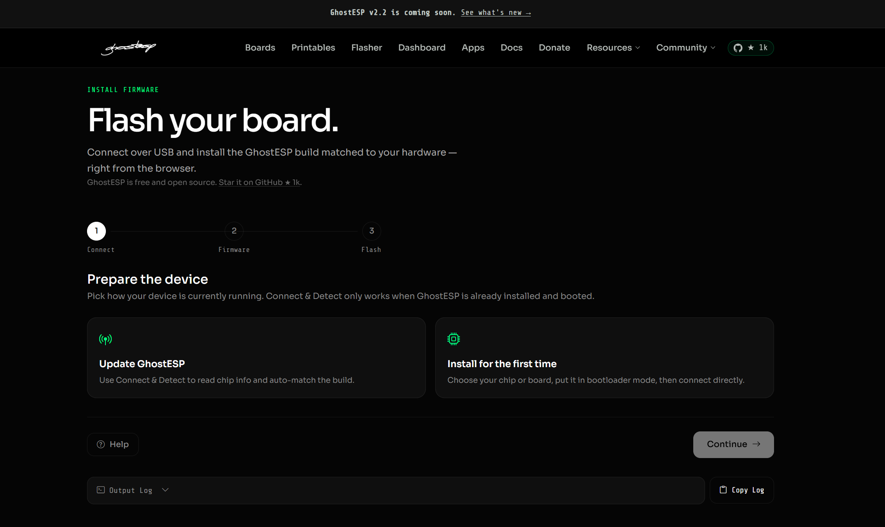
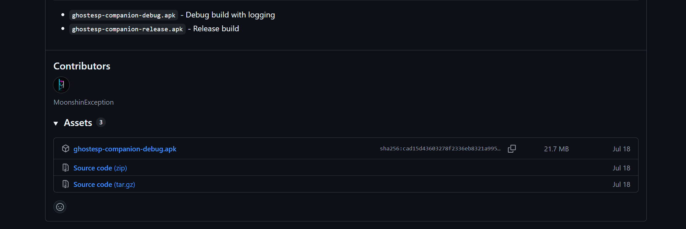

A wireless security lab you can hold in one hand. ESP32-S3 + GhostESP.
DragonByte's open learning project for understanding how Wi-Fi and Bluetooth Low Energy actually behave — discovery, signal behavior, and captive-portal concepts — on real ESP32-S3 hardware, in networks you own or are explicitly authorized to test.

Know your board before you flash it.
The ESP32-S3 ships in dozens of board layouts. Before touching firmware, confirm the chip, the USB interface, and how it enters bootloader mode — guessing wrong is the most common cause of a failed flash.
Dual-core Xtensa LX7
240MHz dual-core with native Wi-Fi (2.4GHz) and Bluetooth LE. This is what GhostESP's scanning and advertising features run on.
Native USB vs. USB-UART bridge
Boards with a native USB port need no driver and enter download mode automatically. Boards wired through a CH340/CP210x bridge need that driver and a manual BOOT+RESET sequence.
Power and data cable
Use a cable that carries data, not a charge-only cable. If the board enumerates as a serial port, the cable is fine — if nothing shows up, try a different one first.
Installing GhostESP, step by step.
GhostESP is flashed through the official browser-based flasher. These are the exact steps we followed and verified on our own ESP32-S3 hardware — not a hypothetical walkthrough.
Open the official flasher and connect
Visit the GhostESP flasher in a WebSerial/WebUSB-capable browser (Chrome or Edge) and connect your board over USB.
Select your chip
Choose "Install for the first time" and pick ESP32-S3 from the chip list, or filter by board brand if your exact board is listed.
Enter bootloader mode
Native-USB boards enter download mode automatically. Bridge-chip boards need BOOT held, RESET pressed, then BOOT released before the flasher can connect.
Flash and verify
Review the summary (application, bootloader, and partition table offsets), then flash. A clean run ends with the board rebooting into GhostESP automatically.
What discovery actually shows you.
Scanning reads what's already being broadcast — SSIDs, channels, signal strength, encryption type on the Wi-Fi side; advertising packets, device names, and service UUIDs on BLE. None of this requires joining a network or pairing a device.
Wi-Fi discovery
Passive scans surface nearby SSIDs, the channel and band they're on, approximate signal strength (RSSI), and whether a network advertises open, WPA2, or WPA3 security — all from management frames every AP already sends.
BLE discovery
BLE devices periodically advertise — a device name, manufacturer data, and service UUIDs. Scanning catches these broadcasts. It does not establish a connection or read data the device isn't already advertising.
How a captive portal works — without collecting anything.
A captive portal is the landing page your phone shows when you join hotel or airport Wi-Fi. This lab demonstrates the mechanism locally: a labeled page served on your own device, on your own network, with no login fields, no data capture, and nothing sent anywhere.
Why we don't ship a working credential form
A realistic-looking login page that captures what people type is a phishing tool, regardless of the hardware it runs on. This project deliberately leaves that capability out. The demo below only renders a static layout — submitting it does nothing but show you this message.
From our own bench.
Real photos and screenshots captured while building this lab — not stock images, not staged results.



Nine guides, start to finish.
Every guide below exists as a real Markdown file in /docs. They're written to be followed in order, but each one stands alone.
When the board won't cooperate.
Board not detected over USB
Swap to a known-good data cable, try a different USB port (prefer USB-A on a hub or direct on a laptop), and confirm the board appears in your OS's device list before opening the flasher.
Flasher can't enter bootloader mode
On bridge-chip boards: hold BOOT, press and release RESET while still holding BOOT, then release BOOT. Native-USB ESP32-S3 boards should not need this — if they do, check you selected the right port.
Flash completes but the board won't boot
Re-run with "erase all flash before programming" enabled to clear partial writes, then flash again at the default baud rate before trying a higher one.
No networks or devices show up when scanning
Confirm the firmware actually booted into GhostESP (check serial output), and that you're testing in a location with networks/devices actually in range.
Scope matters more than capability.
Read this before you power on the board
- Only scan, test, or demonstrate on networks and devices you own, or have explicit written authorization to test.
- This project does not include credential harvesting, deceptive copies of real login pages, unauthorized deauthentication, private-traffic interception, or hidden data collection — and never will.
- The captive-portal material here teaches the concept with a clearly labeled, non-collecting local demo — not a working phishing page.
- Wireless scanning laws and acceptable-use policies vary by country, network, and employer. You're responsible for knowing and following the rules that apply to you.
- Results in this repository reflect what we actually tested on our own hardware. Where something is untested, the docs say so explicitly.